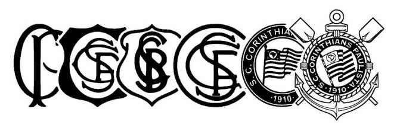

CORINTHIANS
Maior de SP

Sport Club Corinthians Paulista, comumente referido como Corinthians, ou ainda pelo seu acrônimo SCCP, é um clube poliesportivo brasileiro da cidade de São Paulo.
Sport Club Corinthians Paulista, comumente referido como Corinthians, ou ainda pelo seu acrônimo SCCP, é um clube poliesportivo brasileiro da cidade de São Paulo.
Em 1º de setembro de 1910, cinco trabalhadores foram inspirados pela turnê do Corinthian Football Club no Brasil. O time inglês já havia vencido com facilidade o Fluminense e o Club Athletico Paulistano, e nesse dia, cravou mais uma vitória sobre um dos grandes times paulistas da época, a Associação Atlética das Palmeiras.
Na volta da partida, ainda em êxtase, os cincos operários (Joaquim Ambrósio, Antônio Pereira, Rafael Perrone, Anselmo Côrrea e Carlos Silva) se deparam com um terreno baldio na Rua José Paulino, chamada na época de Rua dos Imigrantes, na esquina com a Rua Cônego Martins - no bairro do Bom Retiro. Este viria a ser o primeiro campo do Corinthians, apelidado de “Lenheiro”, por ter servido anteriormente como um depósito de lenha.

Titulos nacionais e interestaduais
Títulos estaduais
Entre outros diversos torneios e taças internacionais e interestaduais.
| Nome | Número | Posição |
|---|---|---|
| Hugo Souza | 1 | Goleiro |
| Matheuzinho | 2 | Lateral Direito |
| Matheus Bidu | 21 | Lateral esquerdo |
| Gabriel Paulista | 3 | Zagueiro |
| Gustavo Henrique | 13 | |
| André Carrillo | 19 | Meio-campo |
| Raniele | 14 | |
| Rodrigo Garro | 8 | |
| Memphis Depay | 10 | Atacante/Ala |
| Yuri Alberto | 9 | Centroavante |
| Mateus Pereira | 23 | Ala/Atacante |